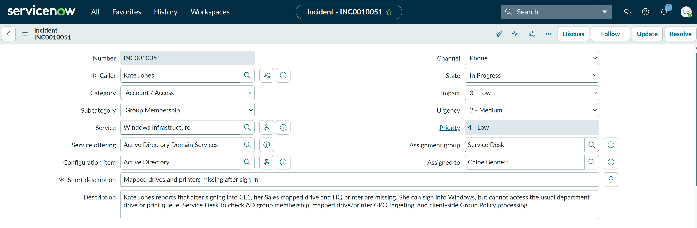
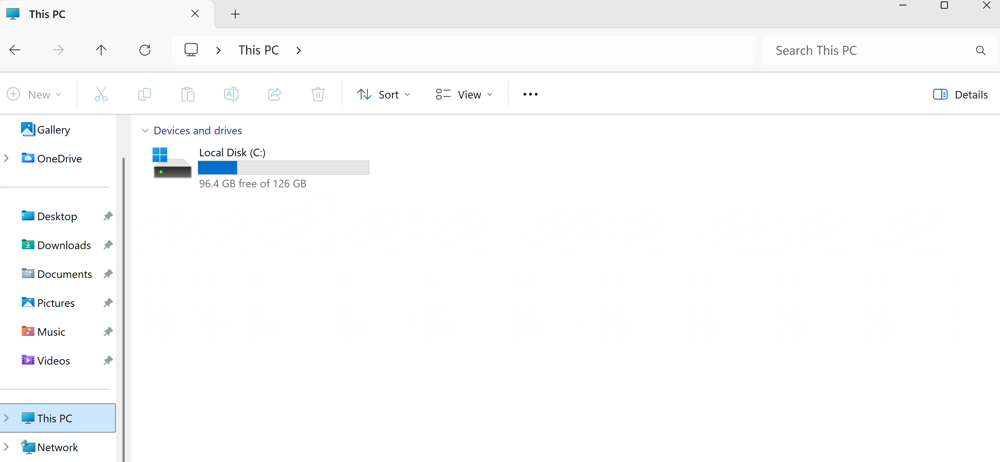
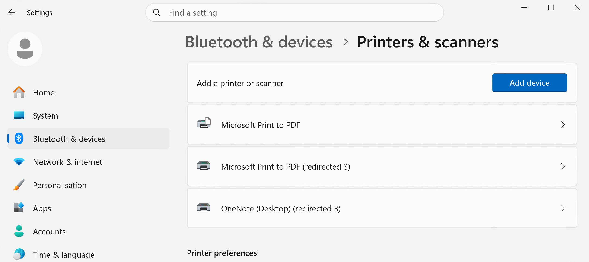
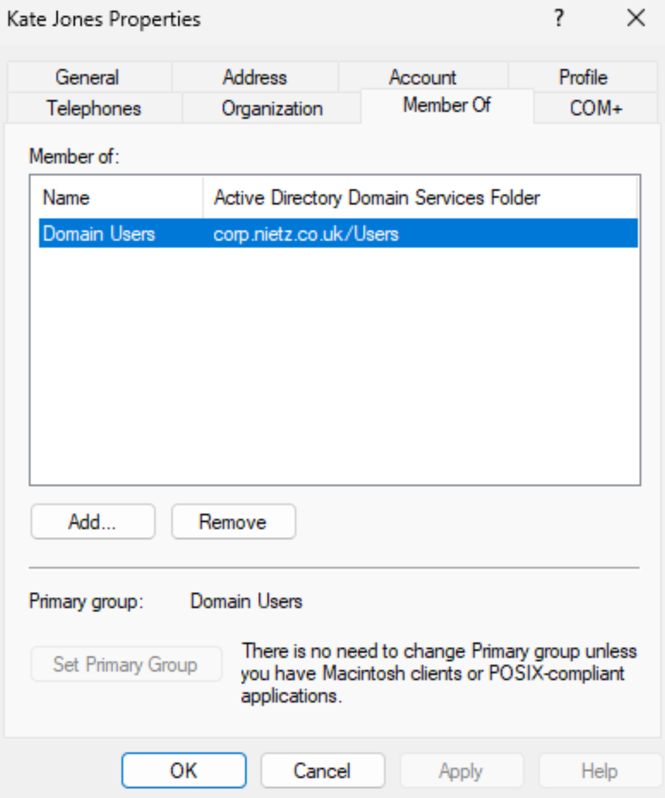
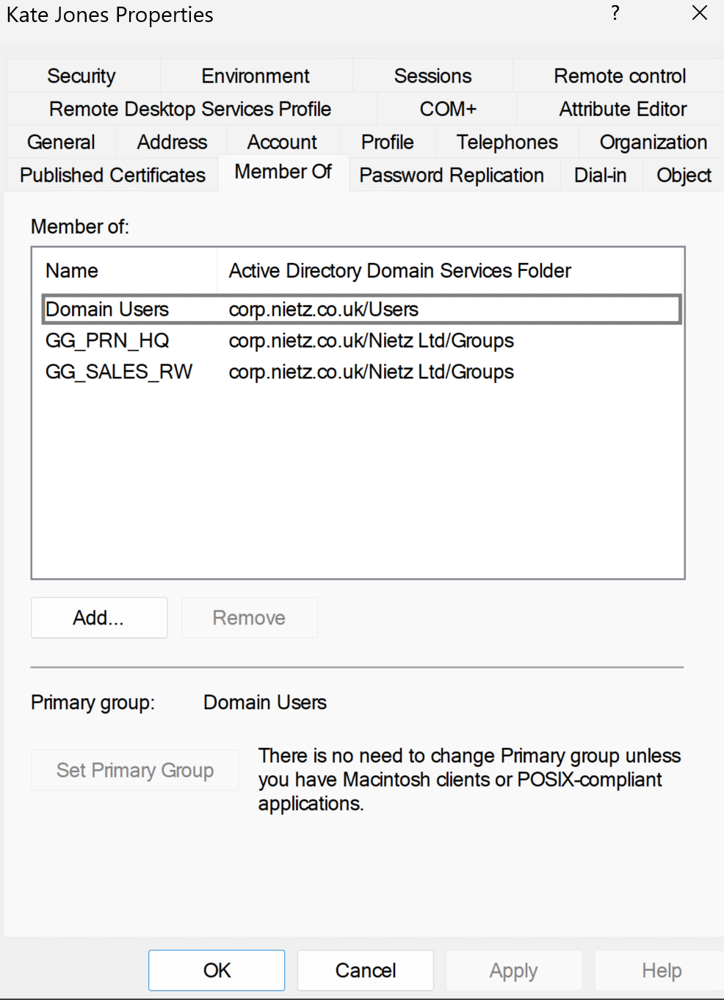
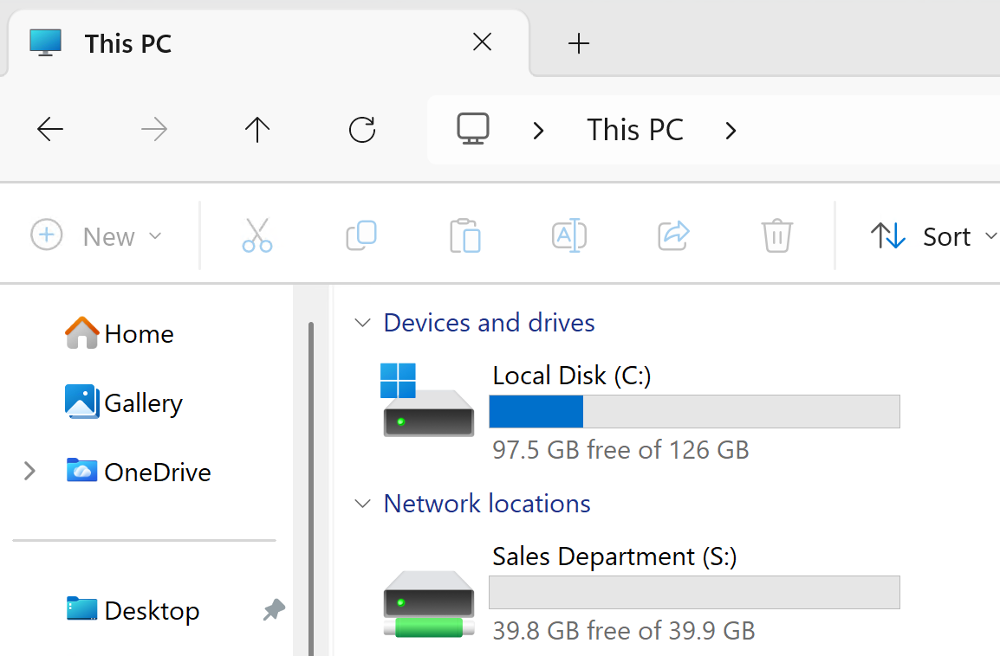
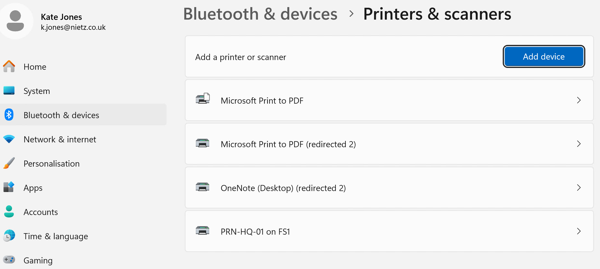
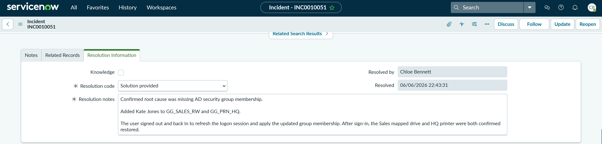

TS-033: Mapped drives and printers missing after sign-in
Restored a Sales user’s mapped drive and HQ printer after confirming that Windows sign-in succeeded but the required Active Directory group memberships were missing.
Scenario
Kate Jones reported that after signing in to CL1, her Sales mapped drive and HQ printer were missing. She could still sign in to Windows, so I treated this as a resource access and group membership issue rather than a general authentication failure.
ServiceNow Ticket
The incident was logged as a single-user access issue and assigned to Chloe Bennett in the Service Desk. The category was set to Account / Access, the subcategory to Group Membership, the service to Windows Infrastructure, the service offering to Active Directory Domain Services, and the configuration item to Active Directory. Impact was set to 3 - Low, urgency to 2 - Medium, and priority to 4 - Low.

Investigation
I validated the user-side symptoms on CL1. The Sales mapped drive was not visible under Network locations, and the expected HQ printer was not listed in Printers & scanners.


I then checked Kate Jones' Active Directory group membership. The Sales mapped drive and HQ printer were controlled through AD security groups, so the missing resource groups explained why the drive and printer were not applying at sign-in.

Domain Users, confirming the missing resource group membership.Fix Applied
I added Kate Jones to the required resource groups: GG_SALES_RW for the Sales mapped drive and GG_PRN_HQ for the HQ printer.

Validation
After the group membership correction, the user signed out and back in to refresh the logon session and apply the updated group membership. The Sales Department mapped drive appeared as S:, and PRN-HQ-01 on FS1 appeared in Printers & scanners.

S: after sign-out/sign-in refresh.
Resolution
The ticket was resolved with the resolution code Solution provided. The resolution notes summarised the root cause, group membership change, logon refresh and validation outcome.

Summary
- Resolved a P4 Low access incident affecting one user’s mapped drive and printer resources.
- I classified the ticket as Account / Access > Group Membership and linked it to Windows Infrastructure, Active Directory Domain Services and the Active Directory configuration item.
- I confirmed the user could sign in, but the Sales mapped drive and HQ printer were missing.
- I identified missing AD security group membership as the root cause.
- I added Kate Jones to
GG_SALES_RWandGG_PRN_HQ. - I validated that the Sales mapped drive and HQ printer returned after sign-out/sign-in refresh.
- I resolved the incident in ServiceNow using the code Solution provided with clear resolution notes.